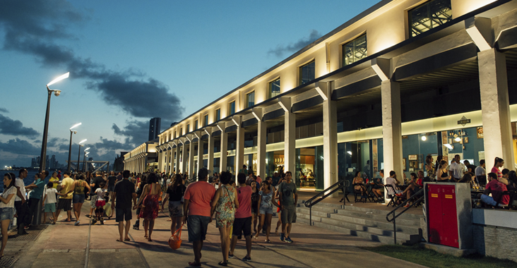

O Ponto de Partida
O Marco Zero, localizado no coração da cidade do Recife, é um ícone histórico e geográfico de significância imensurável. Esse ponto emblemático marca não apenas o início das medições das distâncias rodoviárias a partir da cidade, mas também simboliza o encontro de culturas, histórias e trajetórias diversas. Situado na Praça Rio Branco, próximo ao Porto de Recife, o Marco Zero não é apenas um marco geográfico, mas também um ponto de encontro para eventos culturais, feiras e celebrações. Com sua presença imponente e atmosfera vibrante, o Marco Zero permanece como testemunha silenciosa das transformações da cidade ao longo dos tempos, capturando a essência dinâmica e multicultural de Recife.
